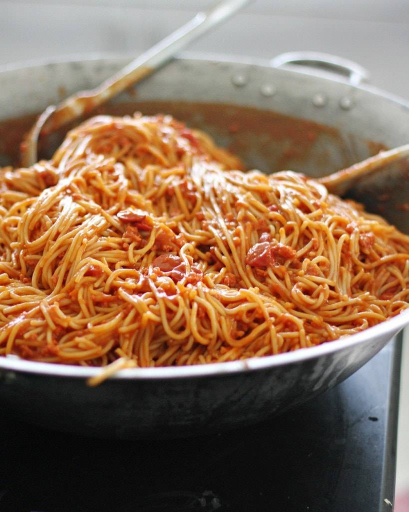

Spaghetti Recipe

Description
One of my favorite food that is a must in every event in my life.
Spaghetti!
This Filipino style spaghetti is a creamy and sweet if cooked right.
Recipe
- Spaghetti
- Oil
- Onion
- garlic
- Ground pork
- Pork cubes
- Tomato paste
- Tomato sauce
- Water
- Salt
- Pepper
- Sugar
Steps
- Cooke noodles. Drain well and set aside the pasta water
- Saute the onions and garlic. Then add the ground pork
- Add pork cubes, then add the tomato paste and tomato
sauce. Saute for 2 minutes
- Add sugar, pepper and water. simmer for 15-20 minutes.
Season with salt and adjust the sugar if needed. Use
remaining pasta water as starch
- Get the cooked noodles and pour the sauce on top and sprinkle with grated cheese
More Recipes